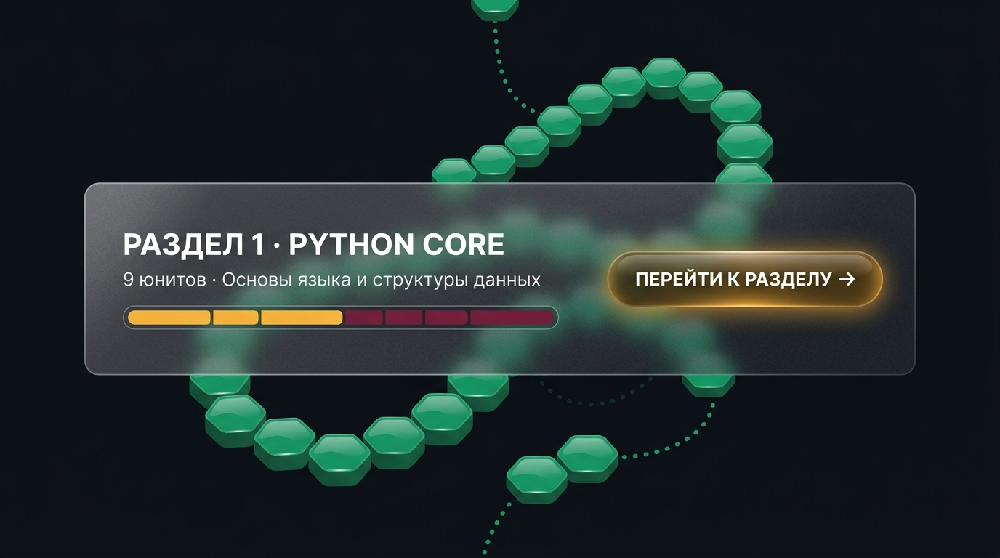
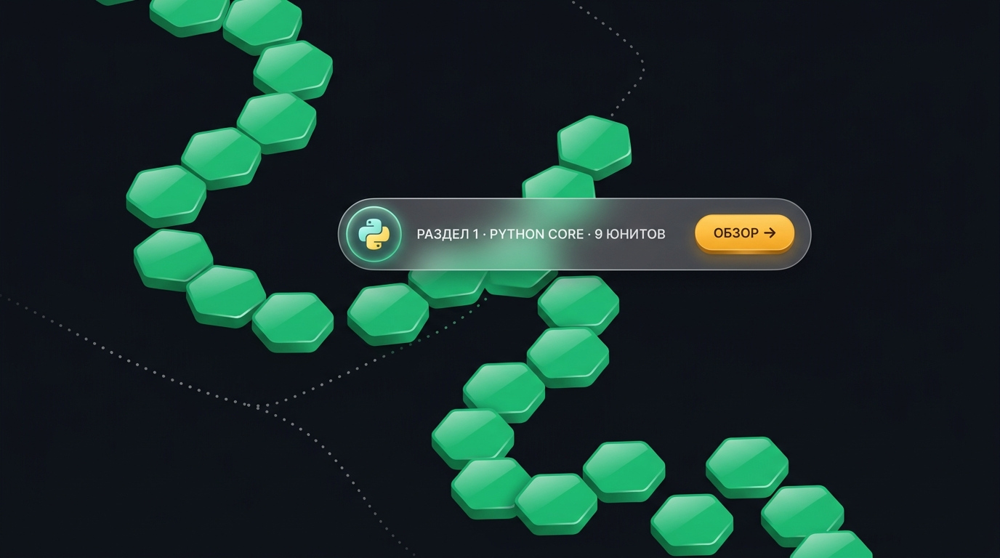
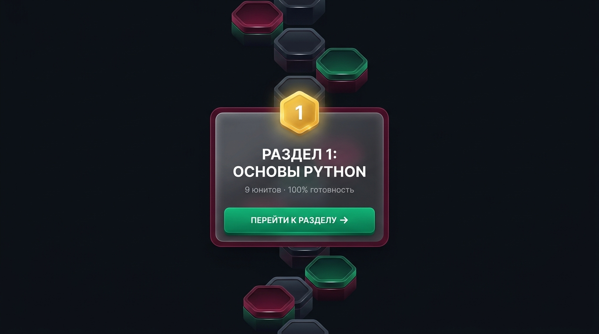
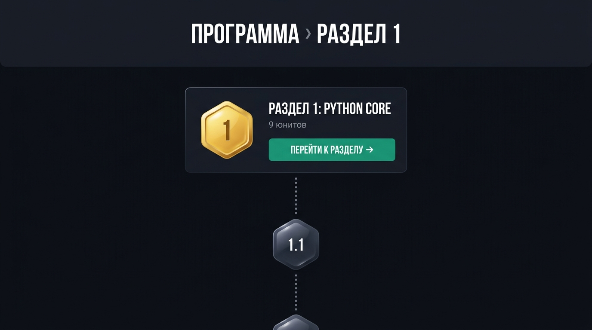
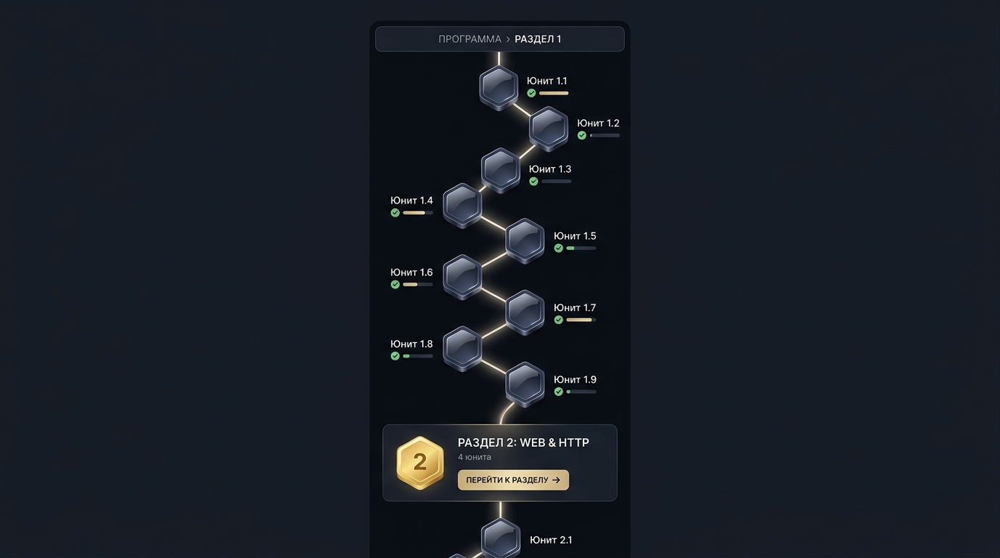

Полноширинная карточка из матового стекла на всю ширину тропы с сегментами прогресса.

Ультра-компактная стеклянная пилюля с иконкой раздела, парящая над тропой.

Центрированная карточка прямо по оси тропы с золотым гексагоном номера раздела.

Тропа открывается золотым порталом Раздела 1. Все главы оформлены абсолютно единообразно.

Тропа сразу начинается с ноды Юнита 1.1, а карточка появляется только при переходе к Разделу 2.